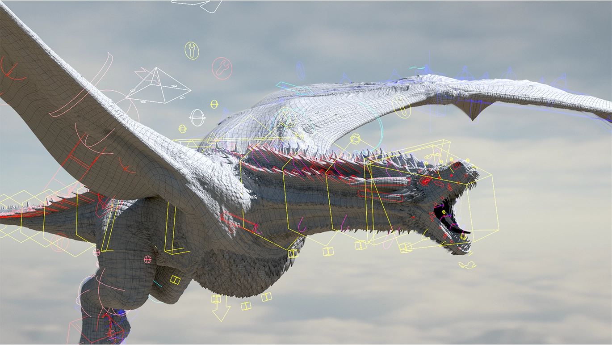
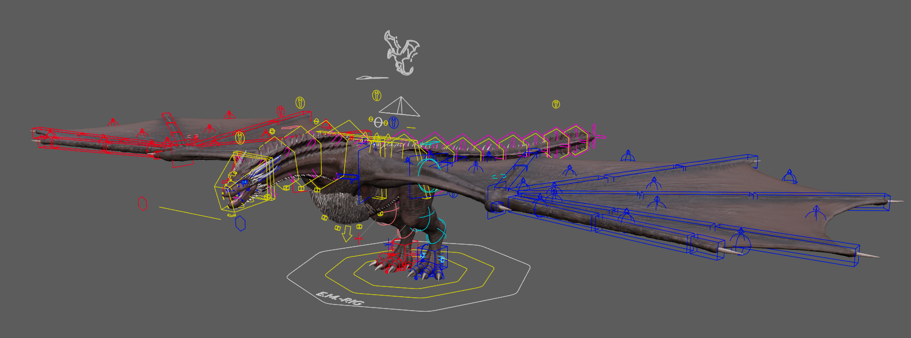
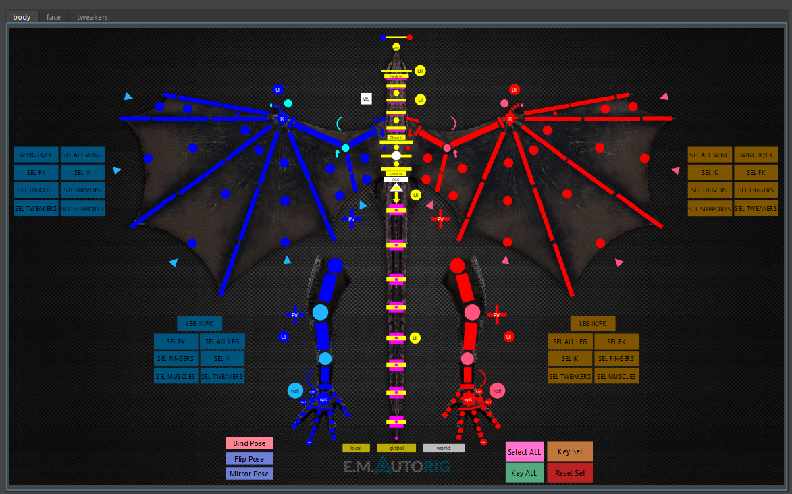
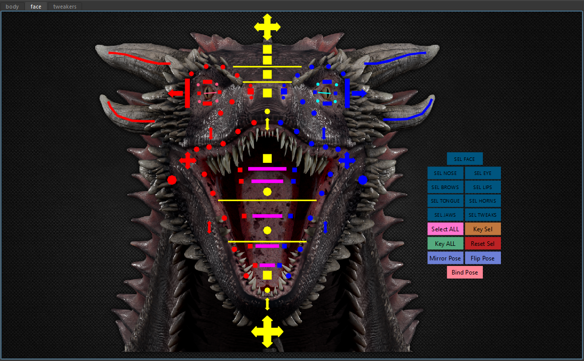

Drogon
Wyvern Creature Rig

A feature-rich, fan-made Wyvern rig of Drogon, showcasing advanced deformation and complex control systems for realistic creature animation.
Tools Used
Video Showcase
Rig Breakdown
Animation Test
Credits
Control Systems
Custom picker interfaces and rig controls designed for intuitive animator interaction.

Rig Overview
Full creature rig with IK/FK switching, space switching, and advanced deformation systems including corrective blendshapes and skin sliding for realistic dragon motion.

Body Picker
Custom body picker interface for quick selection of all body controls. Wings, tail, spine, and limb controls organized for efficient animator workflow.

Face Picker
Dedicated facial picker for precise control over jaw, eyes, nostrils, and brow articulation. Enables nuanced facial expressions and lip sync for the creature.
The Student Version
The original Drogon rig, built during my time as a student. This earlier iteration was used to create a fan-made Game of Thrones shot — the project that started it all.